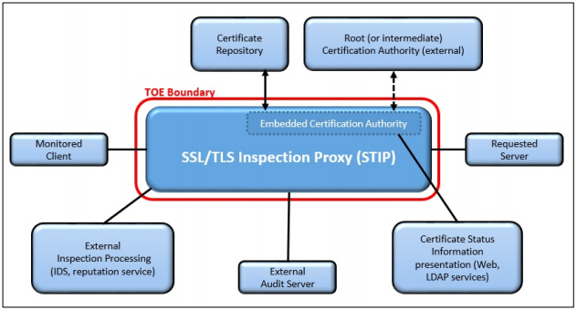

first first | Daisy Diff compare report.
Click on the changed parts for a detailed description. Use the left and right arrow keys to walk through the modifications. |
last  |
| first | Daisy Diff compare report.
Click on the changed parts for a detailed description. Use the left and right arrow keys to walk through the modifications. |
last |

| Version | Date | Comment |
|---|---|---|
| 1.0 | 2019-08-23 | Update release |
| 1.1 | 2022-11-17 | Updates to reflect GitHub conversion, compatibility with CPP_ND_V2.2E, and Technical Decisions applied to version 1.0 |
| 2.0 | 2026-02-18 | Incorporate NIAP Technical Decisions and functional packages, Update to CC:2022 |
|
Assurance
| Grounds for confidence that a TOE meets the SFRs [CC]. |
|
Base Protection Profile (Base-PP)
| Protection Profile used as a basis to build a PP-Configuration. |
|
Collaborative Protection Profile (cPP)
| A Protection Profile developed by international technical communities and approved by multiple schemes. |
|
Common Criteria (CC)
| Common Criteria for Information Technology Security Evaluation (International Standard ISO/IEC 15408). |
|
Common Criteria Testing Laboratory
| Within the context of the Common Criteria Evaluation and Validation Scheme (CCEVS), an IT security evaluation facility accredited by the National Voluntary Laboratory Accreditation Program (NVLAP) and approved by the NIAP Validation Body to conduct Common Criteria-based evaluations. |
|
Common Evaluation Methodology (CEM)
| Common Evaluation Methodology for Information Technology Security Evaluation. |
|
Direct Rationale
| A type of Protection Profile, PP-Module, or Security Target in which the security problem definition (SPD) elements are mapped directly to the SFRs and possibly to the security objectives for the operational environment. There are no security objectives for the TOE. |
|
Distributed TOE
| A TOE composed of multiple components operating as a logical whole. |
|
Extended Package (EP)
| A deprecated document form for collecting SFRs that implement a particular protocol, technology, or functionality. See Functional Packages. |
|
Functional Package (FP)
| A document that collects SFRs for a particular protocol, technology, or functionality. |
|
Operational Environment (OE)
| Hardware and software that are outside the TOE boundary that support the TOE functionality and security policy. |
|
Protection Profile (PP)
| An implementation-independent set of security requirements for a category of products. |
|
Protection Profile Configuration (PP-Configuration)
| A comprehensive set of security requirements for a product type that consists of at least one Base-PP and at least one PP-Module. |
|
Protection Profile Module (PP-Module)
| An implementation-independent statement of security needs for a TOE type complementary to one or more Base-PPs. |
|
Security Assurance Requirement (SAR)
| A requirement to assure the security of the TOE. |
|
Security Functional Requirement (SFR)
| A requirement for security enforcement by the TOE. |
|
Security Target (ST)
| A set of implementation-dependent security requirements for a specific product. |
|
Target of Evaluation (TOE)
| The product under evaluation. |
|
TOE Security Functionality (TSF)
| The security functionality of the product under evaluation. |
|
TOE Summary Specification (TSS)
| A description of how a TOE satisfies the SFRs in an ST. |
|
Attribute
| A characterization of an entity (monitored client or the server requested by a monitored client) used in the TLS session establishment policy or the plaintext processing policy implemented by the TOE that describes the entity. Common attributes include IP address, name, and certificates associated to an entity. |
|
Block operation
| A high-level operation of the TLS session establishment policy implemented by the TOE that prevents TLS sessions between a monitored client and the server requested by the client. |
|
Bypass operation
| A high-level operation of the TLS session establishment policy implemented by the TOE that allows a TLS session between a monitored client and the server requested by the client. Alternatively, an operation of the plaintext processing policy implemented by the TOE to bypass certain inspection processing functional components for plaintext data flows established under the SSL/TLS session establishment policy. |
|
Inspect operation
| A high-level operation of the TLS session establishment policy implemented by the TOE that establishes a TLS session thread between a monitored client and a server requested by the monitored client in order to provide security services on the underlying plaintext application data. |
|
Inspection processing functional components
| A discrete set of security functions implemented within a single logical component, internal or external to the TOE that provides security services based on a plaintext data flow controlled by the TOE intended to protect a monitored client from defined security threats, or to enforce a defined policy regarding the servers allowed to be accessed by monitored clients. |
|
Monitored Client
| A TLS client that uses the TOE as an SSL/TLS Inspection Proxy. This device requires a trust anchor to be installed for the internal CA of the TOE, and makes SSL/TLS requests for services external to the enclave. This client makes SSL/TLS requests to a “requested server” through the TOE. |
|
Requested Server
| The target of an SSL/TLS request by a monitored client through the TOE. It is typically a service provider for clients using SSL/TLS. If mutual authentication is to be supported, this device requires a trust anchor to be installed for the internal CA of the TOE. |
|
Secure Sockets Layer/Transport Layer Security (SSL/TLS)
| A set of security protocols defined by IETF RFCs to establish a secure point-to-point channel between a client and a server. The secure channel provides confidentiality, integrity and proof of origin to plaintext application data transferred between the client and server. SSL refers to early implementations of the SSL/TLS protocols that are deprecated. TLS refers to current versions of the SSL/TLS protocol. |
|
TLS messages
| Specific messages defined by TLS protocol standards. The TLS messages addressed in this PP-Module include TLS handshake messages: Client Hello, Server Hello, Server Certificate, Server Key Exchange, Client Key Exchange, Certificate Request, Client Certificate, Client Certificate Verify, Server Finished and Client Finished messages. |
|
TLS session parameters
| The parameters of a TLS session established by the TOE for protecting thru-traffic, minimally to include: the negotiated version, negotiated cipher suite, the size of any key exchange values sent or received in key exchange messages, the server certificate received, (a reference to) the server certificate sent, the client certificate received, (a reference to) the client certificate sent, and other negotiated values determined by the TLS handshake that are not fixed for all TLS sessions established. |
|
TLS session thread
| A connection negotiated by the TOE consisting of a TLS secure point-to-point channel between a monitored client and the TOE, a TLS secure point-to-point channel between the TOE and the requested server, and any traffic flow containing the underlying application plaintext decrypted from one of the SSL/TLS channels, that is transferred within or between inspection processing functional components controlled by the TOE. |

Requirements in this PP-Module are designed to address the security problem in the following use cases. The description of these use cases provide instructions for how the TOE and its OE should be made to support the functionality required by this PP-Module.
This PP-Module permits the inspection of mutually-authenticated TLS sessions between monitored clients and requested servers via exception processing. However, as a best practice, it is recommended instead that this behavior be handled as part of the TLS Inspection Bypass and/or TLS Session Blocking functionality. If the TOE provides inspection processing for mutually authenticated traffic, the ST must claim these optional SFRs.
This PP-Module does not specify routing policies for non-TLS traffic and exception processing should not be used to address functionality otherwise included in the collaborative Protection Profile Module for Stateful Traffic Filter Firewalls.
The TOE functions as a TLS forward proxy for the following operations:
Use of weak cryptography can allow adversary access to plaintext intended by the monitored clients to be encrypted. Such access could disclose user passwords that facilitate additional activities against users of monitored clients. Within this PP-Module, the focus is on the use of weak cryptography and adversary attempts to degrade the cryptographic operations within the TLS protocol.
External network security devices may communicate with the TOE to apply security services to the exposed plaintext. An adversary may attempt to gain access the plaintext via misrouting of traffic or manipulate the traffic in such a way as to cause unauthorized exposure, denial of service, or corruption of the underlying plaintext.
Use of weak cryptography can allow adversary access to plaintext intended by the monitored clients to be encrypted. Such access could disclose user passwords that facilitate additional activities against users of monitored clients. Within this PP-Module, the focus is on the use of weak cryptography and adversary attempts to degrade the cryptographic operations within the TLS protocol.
External network security devices may communicate with the TOE to apply security services to the exposed plaintext. An adversary may attempt to gain access the plaintext via misrouting of traffic or manipulate the traffic in such a way as to cause unauthorized exposure, denial of service, or corruption of the underlying plaintext.
These assumptions are made on the Operational Environment (OE) in order to be able to ensure that the security functionality specified in the PP-Module can be provided by the TOE. If the TOE is placed in an OE that does not meet these assumptions, the TOE may no longer be able to provide all of its security functionality.
These assumptions are made on the Operational Environment in order to be able to ensure that the security functionality specified in the PP-Module can be provided by the TOE. If the TOE is placed in an Operational Environment that does not meet these assumptions, the TOE may no longer be able to provide all of its security functionality. All assumptions for the operational environment of the Base-PP also apply to this PP-Module. A.LIMITED_FUNCTIONALITY is still operative, but the assumed functionality of the TOE includes the behavior needed to satisfy the functional claims of this PP-Module. A.NO_THRU_TRAFFIC_PROTECTION is still operative, but only for the interfaces in the TOE that are defined by the Base-PP and not the PP-Module. A.TRUSTED_ADMINISTRATOR is still operative, but the functional claims of this PP-Module offer a limited ability to protect against malicious administrators, which is not within the scope of the original assumption. A.RESIDUAL_INFORMATION is still operative, but the residual information is expanded to include information relevant to STIP operation (e.g. decrypted SSL/TLS payload, ephemeral keys).All security objectives for the operational environment of the Base-PP also apply to this PP-Module.
OE.NO_THRU_TRAFFIC_PROTECTION is still operative, but only for the interfaces in the TOE that are defined by the Base-PP and not the PP-Module.
OE.RESIDUAL_INFORMATION is still operative, but the residual information is expanded to include information relevant to STIP operation (e.g. decrypted SSL/TLS payload, ephemeral keys).
OE.TRUSTED_ADMIN is still operative, but this PP-Module also allows for the enforcement of administrative role separation, which can be used to limit the impact of malicious use of the TOE.
| Assumption or OSP | Security Objectives | Rationale |
| A.AUDIT | OE.AUDIT | The operational environment objective OE.AUDIT is realized through A.AUDIT because the audit server assumed to be present fulfills all aspects of the objective for the Operational Environment. |
| A.CERT_REPOSITORY | OE.CERT_REPOSITORY | The operational objective OE.CERT_REPOSITORY is realized through A.CERT_REPOSITORY because the certificate repository assumed to be present fulfills all aspects of the objective for the Operational Environment. |
| OE.CERT_REPOSITORY_SEARCH | The operational objective OE.CERT_REPOSITORY_SEARCH is realized through A.CERT_REPOSITORY because the certificate repository assumed to be present implements all aspects of the search function laid out in the objective for the Operational Environment. | |
| P.AUTHORIZATION_TO_INSPECT | OE.CONSENT_TO_INSPECT | The OSP P.AUTHORIZATION_TO_INSPECT can be realized through OE.CONSENT_TO_INSPECT because the OE provides a notice and consent message to monitored users/clients. |
This SFR has been modified from its definition in the Base-PP to mandate the use of TLS. Other protocol options may be selected without restriction. Any element that is not present in this section is unchanged from its definition in the Base-PP.
The text of FTP_ITC.1.1 is replaced with:
FTP_ITC.1.1 The TSF shall be capable of using TLS as defined in the Functional Package for TLS and [selection: IPsec, SSH as defined in the Functional Package for SSH, DTLS as defined in the Functional Package for TLS, HTTPS, no other protocols] to provide a trusted communication channel between itself and authorized IT entities supporting the following capabilities: audit server, TLS session proxying, [selection: authentication server, Enrollment over Secure Transport, [assignment: other capabilities], no other capabilities] that is logically distinct from other communication channels and provides assured identification of its end points and protection of the channel data from disclosure and detection of modification of the channel data.
Application Note: This SFR is modified from its definition in the Base-PP by specifying that a conformant TOE will always implement TLS trusted channels at minimum, due to the Module's required functionality for SSL/TLS session proxying. EST is also specified as a selectable use of TLS because this interface is defined in the PP-Module as selection-based functionality. The TLS functionality used to implement SSL/TLS session proxying is defined in this PP-Module under the FCS_TTTC_EXT and FCS_TTTS_EXT requirements. For other potential TLS uses (e.g. EST, audit server communications), the relevant SFRs from the Base-PP would be used.
While there is a requirement that a certificate repository exists and the TOE stores all certificates it generates in that repository, the repository can physically be within the TOE or in the OE. If the repository is provided by the TOE, then the first item in the first selection is chosen. If the storage is provided by the OE, then the second item in the first selection is chosen. It should be noted that the physical implementation of the certificate repository is left to the vendor; for instance, it can be a standalone store, or incorporated within the audit trail.
"No other information" is referenced here because the original definition of the requirement allows for the possibility of CRL storage; this PP-Module does not require the storage of CRLs in this manner, so the selectable option to do so has been removed from the requirement.
| Requirement | Auditable Events | Additional Audit Record Contents |
|---|---|---|
| FAU_GCR_EXT.1 | ||
| FAU_GCR_EXT.1 | ||
| No events specified | N/A | |
| No events specified | N/A | |
| FAU_GEN.1/STIP | ||
| FAU_GEN.1/STIP | ||
| No events specified | N/A | |
| No events specified | N/A | |
| FAU_STG.5 | ||
| FAU_STG.5 | ||
| No events specified | N/A | |
| No events specified | N/A | |
| FCS_COP.1/STIP | ||
| No events specified | N/A | |
| FCS_STG_EXT.1 | ||
| No events specified | N/A | |
| FCS_TTTC_EXT.1 | ||
| Establishment of TLS session | TLS session parameters | |
| FCS_TTTC_EXT.5 | ||
| No events specified | N/A | |
| FCS_TTTS_EXT.1 | ||
| Establishment of TLS session | TLS session parameters | |
| FDP_CER_EXT.1 | No events specified | N|
| / | ||
| FDP_CER_EXT.1/Server | ||
| Certificate generation |
|
|
| FDP_CER_EXT.2 | ||
| Linking of issued certificate to validated certificate |
Success: [selection: issued certificate value, issued certificate object identifier], [selection: validated certificate value, validated certificate object identifier] Failure: reason for failure | No additional information |
| FDP_CER_EXT.3 | ||
| Certificate generation |
|
|
| FDP_CSIR_EXT.1 | ||
| No events specified | N/A | |
| FDP_PPP_EXT.1 | ||
| Configuration changes to the plaintext processing policy | N/A | |
| FDP_PRC_EXT.1 | ||
| Plaintext routed to inspection processing functional component | TLS session thread identifier, [assignment: processing element identifier] | |
| FDP_RIP.1 | ||
| No events specified | N/A | |
| FDP_STG_EXT.1 | ||
| No events specified | N/A | |
| FDP_STIP_EXT.1 | ||
| Establishment of a TLS inspection session thread | [assignment:
|
|
| Establishment of an encrypted TLS data flow[assignment: Encrypted TLS data flow attributes] | No additional information | |
| Bypass operation invoked | TLS session thread identifier, identifier(s) of processing element(s) bypassed, reason for bypass | |
| Block operation invoked | TLS session thread identifier, reason for blocking | |
| FDP_TEP_EXT.1 | ||
| Mutual authentication authorized[ | assignment: client attributes obtained from the validated client certificate] No additional information | |
| FIA_ENR_EXT.1 | ||
| No events specified | N/A | |
| FIA_X509_EXT.2/STIP | ||
| No events specified | N/A | |
| FMT_MOF.1/STIP | ||
| No events specified | N/A | |
| FMT_SMF.1/STIP | ||
| No events specified | N/A | |
| FMT_SMR.2/STIP | ||
| No events specified | N/A | |
| FPT_FLS.1/STIP | ||
| Indication of failures under this requirement | Indication that the TSF has failed with the type of failure that occurred | |
| FPT_KST_EXT.1 | ||
| No events specified | N/A | |
| FPT_KST_EXT.2 | ||
| All attempts to use the TOE's embedded CA's private signing key and [selection: [assignment: other secret and private keys], no other secret and private keys None] | Identifier of user or process that attempted access | |
| FPT_RCV.1 | ||
| The fact that a failure or service discontinuity occurred | N/A | |
| Resumption of regular operation | TSF failure types that are available on recovery |
While there is a requirement that a certificate repository exists and the TOE stores all certificates it generates in that repository, the repository can physically be within the TOE or in the OE. If the repository is provided by the TOE, then the first item in the first selection is chosen. If the storage is provided by the OE, then the second item in the first selection is chosen. It should be noted that the physical implementation of the certificate repository is left to the vendor; for instance, it can be a standalone store, or incorporated within the audit trail.
"No other information" is referenced here because the original definition of the requirement allows for the possibility of CRL storage; this PP-Module does not require the storage of CRLs in this manner, so the selectable option to do so has been removed from the requirement.
| Identifier | Cryptographic Algorithms | Cryptographic Key Sizes | List of Standards |
|---|---|---|---|
| AES-CCM and CCM-8 | AES in Counter with Cipher Block Chaining-Message Authentication Code mode | [selection: 128 bits, 192 bits, 256 bits] | AES as specified in ISO 18033-3, AES as specified in FIPS PUB 197, CCM and CCM-8 as specified in NIST SP 800-38C |
| 3DES-CBC | Triple-DES used in CBC mode with 3 distinct keys in its key set | 168 bits | TDES as specified in NIST SP 800-67 Rev 2, CBC mode as specified in NIST SP 800-38A addendum |
The ST author describes the certificates issued by its embedded CA for session proxying using TLS server certificates, which is why this is the only EKU specified for this requirement.
The ST author claims the methods for determining the maximum validity period in the selection for the validity field. Both options are claimed if an administrator can configure a time up to a TSF defined maximum.
The ST author describes the methods for determining the name of the embedded CA in the selection for issuer field.
The ST author claims the method for constraining the signature field and the algorithm specification in the subjectPublicKeyInfo field. The selection ‘…in accordance with RFC 8603’ is claimed if the TOE supports the algorithms indicated in the RFC for signing certificates, and also supports other algorithms not intended for signing certificates.
Since “subjectAltName” is claimed as a supported extension, the ST author claims all RFC 5280 name types supported and designates any other standard name types in the assignment, indicating the formatting and normalization standard used for each supported name type. Standards used to refine or provide alternate normalization for RFC 5280 name types are claimed via the assignment.
A certificate profile is further refined by inputs of the function(s) supported.
In the first bullet, the ST author describes the name types indicated for each supported function (a subset of the supported name types indicated in FDP_CER_EXT.1.2/Server), how subjects of certificates are determined, and how the requested subject names are validated. Note that when multiple names are included in a request, 'validated' applies to all names populated in a certificate. Because the TOE is issuing certificates based on validated certificates that it receives, it does not issue an external request to validate the subject identifier, and the STIP function instead interfaces directly with the TOE's embedded CA to generate the required certificate.
The intent of the second bullet is that a new key pair is generated by the TOE for the issued certificate that replaces the validated certificate. FDP_CER_EXT.2 requires the TSF to track this association.
In the third bullet, the ST author describes the additional certificate constraints, if any, provided by the supported function that may override the values included in a certificate request (if supported). It is recommended, but not required, that ML-DSA-87 be used for post-quantum algorithms.
| Management Function | Security Administrator | Auditor | Account Manager | CA Operations Staff |
| Base-PP Mandatory Management Functions (FMT_SMF.1/STIP) | ||||
| Ability to manage user accounts | C | - | CM | - |
| Ability to manage remote audit mechanism | M | CM | - | - |
| Ability to perform on-demand integrity tests | O | O | O | O |
| Ability to import and remove X.509v3 certificates used for STIP into or from the Trust Anchor database | C | - | - | CM |
| Ability to configure identifying information for the TOE's embedded CA | C | - | - | CM |
| Ability to configure a maximum certificate validity duration | C | - | - | CM |
| Ability to manage inspection policy | O | - | - | O |
| Ability to configure inspection processing details | O | - | - | O |
| Base-PP Selectable Management Functions (FMT_SMF.1/STIP) | ||||
| Ability to configure local audit behavior | O | O | - | - |
| Ability to configure and manage certificate profiles | C | - | - | CM |
| Ability to revoke issued certificates | C | - | - | CM |
| Ability to configure certificate status services | C | - | - | CM |
| Ability to configure automated process used to approve the revocation of a certificate or information about the revocation of a certificate | C | - | - | CM |
| Ability to clear a cache of valid issued certificates | M | - | - | CM |
| Ability to configure rules for automated issuance of certificates | C | - | - | CM |
| Ability to modify the CRL and/or OCSP configuration | C | - | - | CM |
| Ability to import private keys | C | - | - | CM |
| Ability to configure the TOE's behavior on validating certificates whose revocation status cannot be determined | M | - | - | CM |
| Ability to configure the TOE's behavior when non-supported critical extensions occur in a requested server certificate | C | - | - | CM |
| Ability to generate and export PKCS#10 messages | C | - | - | CM |
| Ability to configure EST functionality to generate and export EST requests | C | - | - | CM |
| Ability to configure TLS error responses for monitored clients | M | - | - | O |
| Ability to configure notification and consent message for monitored clients | M | - | - | O |
| Ability to configure rules for displaying a notification and consent message for acknowledgment prior to TLS inspection processing | M | - | - | O |
| Ability to search the certificate repository | C | CM | - | CM |
This SFR is iterated from the Base-PP to allow for the ability for the STIP functionality to be distributed across multiple administrative roles. If the TOE does not enforce role separation, the ST author selects "no other roles" to indicate that STIP functionality is managed by the same Security Administrator role specified in the Base-PP.
As is the case in the Base-PP, the TOE does not need its roles to have the same names as those defined in this SFR. It is expected that the ST will define the administrative roles and privileges defined by the TSF and map them to the roles listed in this PP-Module.
If “ability to configure local audit storage behavior” is selected in FMT_SMF.1/STIP, the ‘Auditor’ role must be selected here; role separation is required for audit storage functionality.
This PP-Module iterates the SFR defined in the Base-PP to include additional administrative roles. As defined in FMT_MOF.1/STIP, the TSF may provide different privileges to the given roles.
If the TSF supports an Auditor and/or Account Manager role, it is expected that the relevant selections above will be made. It is the intent of this PP-Module that if either or both of these roles are provided, their critical functionality is isolated from any other roles (see FMT_MOF.1/STIP).
The following rationale provides justification for each SFR for the TOE, showing that the SFRs are suitable to address the specified threats:
| Threat | Addressed by | Rationale | |
|---|---|---|---|
| T. | UNTRUSTED_COMMUNICATIONAUDIT | FCSFAU_TLSCGCR_EXT.1 (from Functional Package for Transport Layer Security (TLS), version 2.1) | Mitigates the threat by defining the TLS trusted channel used for EST if the TOE supports that functionality. |
| mechanism the TOE uses to store certificate data. | |||
| FAU_GEN.1/STIP | Mitigates the threat by defining support for mutually-authenticated TLS, which the TOE may optionally support for EST.FTP_ITC.1 (refined from Base-PPthe auditable events specific to STIP functionality that the TSF must generate. | ||
| FAU_SAR.3 (optional) | Mitigates the threat by optionally defining the TOE interfaces that require protected communications as well as the methods of protection applied to these interfaces.FCS_COP.1/STIPfunctionality to search audit records for events associated with a particular certificate. | ||
| FAU_SCR_EXT.1 (selection-based) | Mitigates the threat by defining cryptographic algorithms requiring the TOE must support for decryption and re-encryption of proxy TLS traffic.FCS_TTTC_EXT.1 to implement a search function for certificate storage if the TSF implements its own certificate store (as opposed to relying on environmental storage). | ||
| FAU_STG.5 | Mitigates the threat by defining requirements for the TOE's implementation of TLS as a client, specifically in the case where the TOE is establishing a proxy connection between itself and the original requested TLS server.FCS_TTTC_EXT.5requiring the TSF to disable the execution of auditable events if the audit trail cannot be written to. | ||
| T.CREDENTIALS | FCS_CKM_EXT.5 (selection-based) | Mitigates the threat by defining the | |
| integrity mechanism used to guarantee the integrity of public key data. | |||
| FCS_TTTSSTG_EXT.1 | Mitigates the threat by defining requirements for the TOE's implementation of TLS as a server, specifically in the case where the TOE is establishing a proxy connection between itself and the original monitored TLS clientrequiring the TOE to implement hardware-based protection for stored keys. | ||
| FDP_PRCCER_EXT.1 | Mitigates the threat by defining requirements for the routing of decrypted plaintext trafficthe rules the TOE must use to generate and issue proxy TLS server certificates from its internal CA. | ||
| FDP_STIPCER_EXT.12 | Mitigates the threat by defining requiring the TOE's ability to establish proxy TLS sessions between a monitored client and a requested server and to apply appropriate rules to the handling of the decrypted traffic to link the certificates presented for TLS connectivity with the certificates it issues from its internal CA. | ||
| FDP_TEPCER_EXT.13 | Mitigates the threat by defining the rules for the TOE's ability to enforce filtering rules on TLS traffic passing through the TOE.FCS_TTTCissuing of proxy TLS server certificates. | ||
| FDP_CER_EXT.34 (selection-based) | Mitigates the threat by defining optional support for TLS mutual authentication that is applied to the TOE's proxy TLS client interface.FCS_TTTC_EXT.4 the rules the TOE must use to generate and issue proxy TLS client certificates from its internal CA if mutual authentication is supported. | ||
| FDP_CER_EXT.5 (selection-based) | Mitigates the threat by defining optional support for TLS session renegotiation that is applied to the rules for the TOE's issuing of proxy TLS client interfacecertificates if mutual authentication is supported. | ||
| FCSFDP_TTTSCRL_EXT.31 (selection-based) | Mitigates the threat by defining optional support for TLS mutual authentication that is applied to the TOE's proxy TLS server interface.FCS_TTTS_EXT.4 rules for the generation of CRLs if the TOE uses this as the mechanism to ensure the freshness of its issued certificates. | ||
| FDP_CSI_EXT.1 (selection-based) | Mitigates the threat by defining optional support for TLS session renegotiation that is applied to the TOE's proxy TLS server interfacethe revocation checking method supported by the TOE for the proxy TLS server certificates it issues, if revocation is how the freshness of its issued certificates is assured. | ||
| FDP_STIPCSI_EXT.2 (selection-based) | Mitigates the threat by defining the optional capability of revocation checking method supported by the TOE to establish a proxy TLS session in the case where for the proxy TLS client certificates it issues, if mutual authentication is supported and revocation is how the freshness of its issued certificates is assured. | T.AUDIT | FAU_STG.1 (from Base-PP)|
| FDP_CSIR_EXT.1 | Mitigates the threat by defining | ||
| FAU_GCRhow the TOE can ensure the use of fresh certificates. | |||
| FDP_OCSP_EXT.1 (selection-based) | Mitigates the threat by defining the mechanism rules for the generation of OCSP responses if the TOE uses to store certificate data. | ||
| FAU_GEN.1/STIP | Mitigates the threat by defining the auditable events specific to STIP functionality that the TSF must generate. | ||
| FAU_SAR.1this as the mechanism to ensure the freshness of its issued certificates. | |||
| FDP_PIN_EXT.1 (optional) | Mitigates the threat by defining administrative review of audit records for any potential issues in TOE configuration or functionality.FAU_STG.5the optional implementation of certificate pinning. | ||
| FDP_STG_EXT.1 | Mitigates the threat by requiring defining the TSF to disable the execution of auditable events if the audit trail cannot be written to.FAU_SAR.3 (optional)mechanism used to protect public key data from unauthorized modification. | ||
| FIA_ENR_EXT.1 | Mitigates the threat by optionally defining the functionality to search audit records for events associated with a particular certificate.FAU_SCRmechanism by which the TOE requests a certificate for its own embedded CA's signing key. | ||
| FIA_ESTC_EXT.1 (selection-based) | Mitigates the threat by requiring the TOE to implement a search function for certificate storage if the TSF implements its own certificate store (as opposed to relying on environmental storage). | T.UNAUTHORIZED_USERS | FMT_MOF.1/STIP|
| defining requirements for the implementation of EST if the TOE uses this mechanism to obtain TLS certificates for its own use. | |||
| FIA_ESTC_EXT.2 (objective) | Mitigates the threat by defining requirements for the | ||
| composition of | |||
| FMT_SMF.1/STIP | Mitigates the threat by defining the TOE's management functions that are specific to STIP functionality. | ||
| FMT_SMREST requests if the TOE supports EST. | |||
| FIA_X509_EXT.2/STIP | Mitigates the threat by defining additional management roles that the TOE may support that are specific to STIP functionality. | T.CREDENTIALS | FCS_TLSC|
| the certificate authentication behavior for STIP connections. | |||
| FPT_KST_EXT.1 | |||
| Mitigates the threat | |||
| FCS_TLSC_EXT.2 (from Functional Package for Transport Layer Security (TLS), version 2.1) | Mitigates the threat because mutually-authenticated TLS is a mechanism by which its own certificate data may be obtained from an external CA. | ||
| FIA_X509_EXT.1 (from Functional Package for X.509, version 1.0) | Mitigates the threat by defining the TOE functionality for certificate validation. | ||
| FIA_X509_EXT.3 (from Functional Package for X.509, version 1.0by requiring the TSF to enforce the prevention of plaintext key export. | |||
| FPT_KST_EXT.2 | Mitigates the threat by preventing the unauthorized use of secret and private keys. | ||
| T.DEVICE_FAILURE | FCS_CKM_EXT.5 (selection-based) | Mitigates the threat by defining the integrity mechanism | |
| used to guarantee the integrity of public key data. | |||
| FCS_STG_EXT.1 | Mitigates the threat by requiring the TOE to implement hardware-based protection for stored keys. | ||
| FDP_CER_EXT.1 | Mitigates the threat by defining the rules the TOE must use to generate and issue proxy TLS server certificates from its internal CA. | ||
| FDP_CER_EXT.2 | Mitigates the threat by requiring the TOE to link the certificates presented for TLS connectivity with the certificates it issues from its internal CA. | ||
| FDP_CER_EXT.3 | Mitigates the threat by defining the rules for the TOE's issuing of proxy TLS server certificates. | ||
| FDP_CSIR_EXT.1 | Mitigates the threat by defining how the TOE can ensure the use of fresh certificates. | ||
| FDP_STG_EXT.1 | Mitigates the threat by defining the mechanism used to protect public key data from unauthorized modification. | ||
| FIA_ENR_EXT.1 | Mitigates the threat by defining the mechanism by which the TOE requests a certificate for its own embedded CA's signing key. | ||
| FIA_X509_EXT.1/STIP | Mitigates the threat by defining the certificate validation rules that must be followed for certificates that are used for proxy TLS connections. | ||
| FIA_X509_EXT.2/STIP | Mitigates the threat by defining the certificate authentication behavior for STIP connections. | ||
| FPT_KST_EXT.1 | Mitigates the threat by requiring the TSF to enforce the prevention of plaintext key export. | ||
| FPT_KST_EXT.2 | Mitigates the threat by preventing the unauthorized use of secret and private keys. | ||
| FDP_PIN_EXT.1 (optional) | Mitigates the threat by defining the optional implementation of certificate pinning. | ||
| FIA_ESTC_EXT.2 (objective) | Mitigates the threat by defining requirements for the composition of EST requests if the TOE supports EST. | ||
| FCS_CKM_EXT.5 (selection-based) | Mitigates the threat by defining the integrity mechanism used to guarantee the integrity of public key data. | ||
| FDP_CER_EXT.4 (selection-based) | Mitigates the threat by defining the rules the TOE must use to generate and issue proxy TLS client certificates from its internal CA if mutual authentication is supported. | ||
| FDP_CER_EXT.5 (selection-based) | Mitigates the threat by defining the rules for the TOE's issuing of proxy TLS client certificates if mutual authentication is supported. | ||
| FDP_CRL_EXT.1 (selection-based) | Mitigates the threat by defining rules for the generation of CRLs if the TOE uses this as the mechanism to ensure the freshness of its issued certificates. | ||
| FDP_CSI_EXT.1 (selection-based) | Mitigates the threat by defining the revocation checking eChecking method supported by the TOE for the proxy TLS server certificates it issues, if revocation is how the freshness of its issued certificates is assured. | ||
| FDP_CSI_EXT.2 (selection-based) | Mitigates the threat by defining the revocation checking eChecking method supported by the TOE for the proxy TLS client certificates it issues, if mutual authentication is supported and revocation is how the freshness of its issued certificates is assured. | ||
| FDP_OCSPCSIR_EXT.1 (selection-based) | Mitigates the threat by defining rules for the generation of OCSP responses if the TOE uses this as the mechanism to ensure the freshness of its issued how the TOE can ensure the use of fresh certificates. | ||
| FIAFDP_ESTCOCSP_EXT.1 (selection-based) | Mitigates the threat by defining requirements rules for the implementation generation of EST OCSP responses if the TOE uses this as the mechanism to obtain TLS certificates for its own use. | T.SERVICES | FCS_TLSC|
| ensure the freshness of its issued certificates. | |||
| FDP_PIN_EXT.1 ( | |||
| optional) | Mitigates the threat | ||
| FCS_TLSC_EXT.2 (from Functional Package for Transport Layer Security (TLS), version 2.1) | Mitigates the threat because mutually-authenticated TLS is a mechanism by which its own certificate data may be obtained from an external CA. | ||
| FIA_X509_EXT.1 (from Functional Package for X.509, version 1.0)by defining the optional implementation of certificate pinning. | |||
| FDP_STG_EXT.1 | Mitigates the threat by defining the TOE functionality for certificate validationmechanism used to protect public key data from unauthorized modification. | ||
| FIA_X509ENR_EXT.3 (from Functional Package for X.509, version 1.0) | Mitigates the threat by defining the mechanism by which the TOE generates certificate signing requests, which includes validation of the certificate provided in response. FTP_ITC.1 (refined from Base-PP requests a certificate for its own embedded CA's signing key. | ||
| FIA_ESTC_EXT.1 (selection-based) | Mitigates the threat by defining the TOE interfaces that require protected communications as well as the methods of protection applied to these interfaces. | ||
| FCS_COP.1/STIP | Mitigates the threat by defining cryptographic algorithms the TOE must support for decryption and re-encryption of proxy TLS traffic. | ||
| FCS_TTTC_EXT.1requirements for the implementation of EST if the TOE uses this mechanism to obtain TLS certificates for its own use. | |||
| FIA_ESTC_EXT.2 (objective) | Mitigates the threat by defining requirements for the TOE's implementation of TLS as a client, specifically in the case where the TOE is establishing a proxy connection between itself and the original requested TLS server.FCS_TTTC_EXT.5composition of EST requests if the TOE supports EST. | ||
| FIA_X509_EXT.2/STIP | Mitigates the threat by defining the Supported Groups used by the TOE's proxy TLS client interface.FCS_TTTS_EXT.1certificate authentication behavior for STIP connections. | ||
| FPT_FLS.1/STIP | Mitigates the threat by defining requirements for the TOE's implementation of TLS as a server, specifically in the case where the TOE is establishing a proxy connection between itself and the original monitored TLS client.FDP_CERrequiring the TSF to take some action to preserve a secure state in the response to a loss of integrity or other potential failure. | ||
| FPT_KST_EXT.1 | Mitigates the threat by defining the rules the TOE must use to generate and issue proxy TLS server certificates from its internal CA. | ||
| FDP_CER_EXT.2 | Mitigates the threat by requiring the TOE to link the certificates presented for TLS connectivity with the certificates it issues from its internal CA. | ||
| FDP_CER_EXT.3requiring the TSF to enforce the prevention of plaintext key export. | |||
| FPT_KST_EXT.2 | Mitigates the threat by defining the rules for the TOE's issuing of proxy TLS server certificates. FDP_CSIR_EXTpreventing the unauthorized use of secret and private keys. | ||
| FPT_RCV.1 | Mitigates the threat by defining how the TOE can ensure the use of fresh certificates.FDP_PRCrequiring the TSF to support a maintenance mode of operation that is entered when certain failures occur. | ||
| T.INAPPROPRIATE_ACCESS | FDP_PPP_EXT.1 | Mitigates the threat by defining | |
| the processing rules that the TOE applies to plaintext traffic once decrypted. | |||
| FDP_STIP_EXTRIP.1 | Mitigates the threat by defining the TOE's ability to establish proxy TLS sessions between a monitored client and a requested server and to apply appropriate rules to the handling of the decrypted trafficresidual data that is cleared from TOE memory and when the clearing occurs. | ||
| FDP_TEP_EXT.1 | Mitigates the threat by defining the TOE's ability to enforce filtering rules on TLS traffic passing through the TOE. | ||
| FIA_ENR_EXT.1 | Mitigates the threat by defining the mechanism by which the TOE requests a certificate for its own embedded CA's signing key. | ||
| FIA_X509_EXT.1/STIP | Mitigates the threat by defining the certificate validation rules that must be followed for certificates that are used for proxy TLS connections. | ||
| FIA_X509_EXT.2/STIP | Mitigates the threat by defining the certificate authentication behavior for STIP connections. | ||
| processing rules that the TOE applies to encrypted traffic. | |||
| FMT_MOF.1/STIP | Mitigates the threat by defining the authorized use of the TOE by association between the supported management functions and the roles that are authorized to perform them. | ||
| FMT_SMF.1/STIP | Mitigates the threat by defining the TOE's management functions that are specific to STIP functionality. | ||
| FMT_SMR.2/STIP | Mitigates the threat by defining additional management roles that the TOE may support that are specific to STIP functionality.FDP_PIN_EXT.1 (optional) | ||
| T.SERVICES | FCS_COP.1/STIP | Mitigates the threat by defining | |
| cryptographic algorithms the TOE must support for decryption and re-encryption of proxy TLS traffic. | |||
| FCS_TTTC_EXT.1 | Mitigates the threat by defining requirements for the composition of EST requests if the TOE supports EST. | FDP_CER_EXT.4 (selection-based) | Mitigates the threat by defining the rules the TOE must use to generate and issue proxy TLS client certificates from its internal CA if mutual authentication is supportedTOE's implementation of TLS as a client, specifically in the case where the TOE is establishing a proxy connection between itself and the original requested TLS server. |
| FCS_TTTC_EXT.3 (selection-based) | Mitigates the threat by defining optional support for TLS mutual authentication that is applied to the TOE's proxy TLS client interface. | ||
| FCS_TTTC_EXT.4 (selection-based) | Mitigates the threat by defining optional support for TLS session renegotiation that is applied to the TOE's proxy TLS client interface. | ||
| FCS_TTTC_EXT.5 | Mitigates the threat by defining the Supported Groups used by the TOE's proxy TLS client interface. | ||
| FCS_TTTS_EXT.1 | Mitigates the threat by defining requirements for the TOE's implementation of TLS as a server, specifically in the case where the TOE is establishing a proxy connection between itself and the original monitored TLS client. | ||
| FCS_TTTS_EXT.3 (selection-based) | Mitigates the threat by defining optional support for TLS mutual authentication that is applied to the TOE's proxy TLS server interface. | ||
| FCS_TTTS_EXT.4 (selection-based) | Mitigates the threat by defining optional support for TLS session renegotiation that is applied to the TOE's proxy TLS server interface. | ||
| FDP_CER_EXT.1 | Mitigates the threat by defining the rules the TOE must use to generate and issue proxy TLS server certificates from its internal CA. | ||
| FDP_CER_EXT.2 | Mitigates the threat by requiring the TOE to link the certificates presented for TLS connectivity with the certificates it issues from its internal CA. | ||
| FDP_CER_EXT.3 | Mitigates the threat by defining the rules for the TOE's issuing of proxy TLS server certificates. | ||
| FDP_CER_EXT.4 (selection-based) | Mitigates the threat by defining the rules the TOE must use to generate and issue proxy TLS client certificates from its internal CA if mutual authentication is supported. | ||
| FDP_CER_EXT.5 (selection-based) | Mitigates the threat by defining the rules for the TOE's issuing of proxy TLS client certificates if mutual authentication is supported. | ||
| FDP_CRL_EXT.1 (selection-based) | Mitigates the threat by defining rules for the generation of CRLs if the TOE uses this as the mechanism to ensure the freshness of its issued certificates. | ||
| FDP_CSI_EXT.1 (selection-based) | Mitigates the threat by defining the revocation eChecking method supported by the TOE for the proxy TLS server certificates it issues, if revocation is how the freshness of its issued certificates is assured. | ||
| FDP_CSI_EXT.2 (selection-based) | Mitigates the threat by defining the revocation eChecking method supported by the TOE for the proxy TLS client certificates it issues, if mutual authentication is supported and revocation is how the freshness of its issued certificates is assured. | ||
| FDP_OCSPCSIR_EXT.1 (selection-based) | Mitigates the threat by defining rules for the generation of OCSP responses if the TOE uses this as the mechanism to ensure the freshness of its issued how the TOE can ensure the use of fresh certificates. | ||
| FDP_STIPOCSP_EXT.2 (selection-based) | Mitigates the threat by defining the optional capability of the TOE to establish a proxy TLS session in the case where mutual authentication is supported. | FIA_ESTC_EXT.1 (selection-based) | Mitigates the threat by defining requirements rules for the implementation generation of EST OCSP responses if the TOE uses this mechanism to obtain TLS certificates for its own use. |
| T.DEVICE_FAILURE | FCS_TLSC_EXT.1 (from Functional Package for Transport Layer Security (TLS), version 2.1) | Mitigates the threat because TLS is a mechanism by which its own certificate data may be obtained from an external CA. | |
| FCS_TLSC_EXT.2 (from Functional Package for Transport Layer Security (TLS), version 2.1) | Mitigates the threat because mutually-authenticated TLS is a mechanism by which its own certificate data may be obtained from an external CA. | ||
| FIA_X509_EXT.1 (from Functional Package for X.509, version 1.0as the mechanism to ensure the freshness of its issued certificates. | |||
| FDP_PIN_EXT.1 (optional) | Mitigates the threat by defining the TOE functionality for certificate validationoptional implementation of certificate pinning. | ||
| FIAFDP_X509PRC_EXT.3 (from Functional Package for X.509, version 1.0) | Mitigates the threat by defining the mechanism by which the TOE generates certificate signing requests, which includes validation of the certificate provided in response. | ||
| FCS_STG_EXT.1 | Mitigates the threat by requiring the TOE to implement hardware-based protection for stored keys. | ||
| FDP_CERrequirements for the routing of decrypted plaintext traffic. | |||
| FDP_STIP_EXT.1 | Mitigates the threat by defining the rules the TOE must use to generate and issue proxy TLS server certificates from its internal CA TOE's ability to establish proxy TLS sessions between a monitored client and a requested server and to apply appropriate rules to the handling of the decrypted traffic. | ||
| FDP_CERSTIP_EXT.2 (selection-based) | Mitigates the threat by requiring defining the optional capability of the TOE to link the certificates presented for TLS connectivity with the certificates it issues from its internal CAestablish a proxy TLS session in the case where mutual authentication is supported. | ||
| FDP_CERTEP_EXT.31 | Mitigates the threat by defining the rules for the TOE's issuing of proxy TLS server certificates. | ||
| FDP_CSIR_EXT.1 | Mitigates the threat by defining how the TOE can ensure the use of fresh certificates. | ||
| FDP_STG_EXT.1 | Mitigates the threat by defining the mechanism used to protect public key data from unauthorized modification. | ||
| ability to enforce filtering rules on TLS traffic passing through the TOE. | |||
| FIA_ENR_EXT.1 | Mitigates the threat by defining the mechanism by which the TOE requests a certificate for its own embedded CA's signing key. | ||
| FIA_X509ESTC_EXT.1/STIP (selection-based) | Mitigates the threat by defining the certificate validation rules that must be followed for certificates that are used for proxy TLS connections. | ||
| FIA_X509_EXT.2/STIP | Mitigates the threat by defining the certificate authentication behavior for STIP connections. | ||
| FPT_FLS.1/STIP | Mitigates the threat by requiring the TSF to take some action to preserve a secure state in the response to a loss of integrity or other potential failure. | ||
| FPT_KST_EXT.1 | Mitigates the threat by requiring the TSF to enforce the prevention of plaintext key export. | ||
| FPT_KST_EXT.2 | Mitigates the threat by preventing the unauthorized use of secret and private keys. | ||
| FPT_RCV.1 | Mitigates the threat by requiring the TSF to support a maintenance mode of operation that is entered when certain failures occur. | ||
| FDP_PIN_EXT.1 (optional) | Mitigates the threat by defining the optional implementation of certificate pinning. | ||
| requirements for the implementation of EST if the TOE uses this mechanism to obtain TLS certificates for its own use. | |||
| FIA_ESTC_EXT.2 (objective) | Mitigates the threat by defining requirements for the composition of EST requests if the TOE supports EST. | ||
| FCSFIA_CKMX509_EXT.5 (selection-based)2/STIP | Mitigates the threat by defining the integrity mechanism used to guarantee the integrity of public key data.FDP_CER_EXT.4 (selection-based)certificate authentication behavior for STIP connections. | ||
| FMT_MOF.1/STIP | Mitigates the threat by defining the rules the TOE must use to generate and issue proxy TLS client certificates from its internal CA if mutual authentication is supported. FDP_CER_EXT.5 (selection-based)authorized use of the TOE by association between the supported management functions and the roles that are authorized to perform them. | ||
| FMT_SMF.1/STIP | Mitigates the threat by defining the rules for the TOE's issuing of proxy TLS client certificates if mutual authentication is supported. FDP_CRL_EXT.1 (selection-based)management functions that are specific to STIP functionality. | ||
| FMT_SMR.2/STIP | Mitigates the threat by defining rules for the generation of CRLs if the TOE uses this as the mechanism to ensure the freshness of its issued certificates. FDP_CSI_EXT.1 (selection-based)additional management roles that the TOE may support that are specific to STIP functionality. | ||
| T.UNAUTHORIZED_DISCLOSURE | FCS_COP.1/STIP | Mitigates the threat by defining | |
| cryptographic algorithms the TOE must support for decryption and re-encryption of proxy TLS traffic. | |||
| FCS_TTTC_EXT.1 | Mitigates the threat by defining the revocation eChecking method supported by the TOE for the proxy TLS client certificates it issues, if mutual authentication is supported and revocation is how the freshness of its issued certificates is assured. FDP_OCSP_EXT.1 requirements for the TOE's implementation of TLS as a client, specifically in the case where the TOE is establishing a proxy connection between itself and the original requested TLS server. | ||
| FCS_TTTC_EXT.3 (selection-based) | Mitigates the threat by defining rules for the generation of OCSP responses if the TOE uses this as the mechanism to ensure the freshness of its issued certificates. FIA_ESTC_EXT.1 optional support for TLS mutual authentication that is applied to the TOE's proxy TLS client interface. | ||
| FCS_TTTC_EXT.4 (selection-based) | Mitigates the threat by defining requirements for the implementation of EST if the TOE uses this mechanism to obtain TLS certificates for its own use. | T.UNAUTHORIZED_DISCLOSURE | FCS_TLSC_EXT.1 (from Functional Package for Transport Layer Security (TLS), version 2.1)|
| optional support for TLS session renegotiation that is applied to the TOE's proxy TLS client interface. | |||
| FCS_TTTC_EXT.5 | Mitigates the threat by defining the | ||
| FCS_TLSC_EXT.2 (from Functional Package for Transport Layer Security (TLS), version 2.1) | Mitigates the threat by defining support for mutually-authenticated TLS, which the TOE may optionally support for EST. | ||
| FTP_ITC.1 (refined from Base-PP) | Mitigates the threat by defining the TOE interfaces that require protected communications as well as the methods of protection applied to these interfaces. | ||
| FCS_COP.1/STIP | Mitigates the threat by defining cryptographic algorithms the TOE must support for decryption and re-encryption of proxy TLS traffic. | ||
| FCS_TTTCSupported Groups used by the TOE's proxy TLS client interface. | |||
| FCS_TTTS_EXT.1 | Mitigates the threat by defining requirements for the TOE's implementation of TLS as a clientserver, specifically in the case where the TOE is establishing a proxy connection between itself and the original requested monitored TLS serverclient. | ||
| FCS_TTTCTTTS_EXT.53 (selection-based) | Mitigates the threat by defining the Supported Groups used by the optional support for TLS mutual authentication that is applied to the TOE's proxy TLS client server interface. | ||
| FCS_TTTS_EXT.14 (selection-based) | Mitigates the threat by defining requirements for optional support for TLS session renegotiation that is applied to the TOE's implementation of proxy TLS as a server, specifically in the case where the TOE is establishing a proxy connection between itself and the original monitored TLS clientserver interface. | ||
| FDP_PRC_EXT.1 | Mitigates the threat by defining requirements for the routing of decrypted plaintext traffic. | ||
| FDP_STIP_EXT.1 | Mitigates the threat by defining the TOE's ability to establish proxy TLS sessions between a monitored client and a requested server and to apply appropriate rules to the handling of the decrypted traffic. | ||
| FDP_STIP_EXT.2 (selection-based) | Mitigates the threat by defining the optional capability of the TOE to establish a proxy TLS session in the case where mutual authentication is supported. | ||
| FDP_TEP_EXT.1 | Mitigates the threat by defining the TOE's ability to enforce filtering rules on TLS traffic passing through the TOE. | ||
| FMT_MOF.1/STIP | Mitigates the threat by defining the authorized use of the TOE by association between the supported management functions and the roles that are authorized to perform them. | ||
| FMT_SMF.1/STIP | Mitigates the threat by defining the TOE's management functions that are specific to STIP functionality. | ||
| FMT_SMR.2/STIP | Mitigates the threat by defining additional management roles that the TOE may support that are specific to STIP functionality.FCS_TTTC_EXT.3 (selection-based) | ||
| T.UNAUTHORIZED_USERS | FMT_MOF.1/STIP | Mitigates the threat by defining | |
| the authorized use of the TOE by association between the supported management functions and the roles that are authorized to perform them. | |||
| FMT_SMF.1/STIP | Mitigates the threat by defining the TOE's management functions that are specific to STIP functionality. | ||
| FMT_SMR.2/STIP | Mitigates the threat by defining additional management roles that the TOE may support that are specific to STIP functionality. | ||
| T.UNTRUSTED_COMMUNICATION | FCS_COP.1/STIP | Mitigates the threat by defining cryptographic algorithms the TOE must support for decryption and re-encryption of proxy TLS traffic. | |
| FCS_TTTC_EXT.4 (selection-based)1 | Mitigates the threat by defining optional support for TLS session renegotiation that is applied to requirements for the TOE's implementation of TLS as a client, specifically in the case where the TOE is establishing a proxy TLS client interfaceconnection between itself and the original requested TLS server. | ||
| FCS_TTTSTTTC_EXT.3 (selection-based) | Mitigates the threat by defining optional support for TLS mutual authentication that is applied to the TOE's proxy TLS server client interface. | ||
| FCS_TTTSTTTC_EXT.4 (selection-based) | Mitigates the threat by defining optional support for TLS session renegotiation that is applied to the TOE's proxy TLS server client interface. | ||
| FDPFCS_STIPTTTC_EXT.2 (selection-based)5 | Mitigates the threat by defining the optional capability of Supported Groups used by the TOE to establish a proxy TLS session in the case where mutual authentication is supported. | T.INAPPROPRIATE_ACCESS | FDP_PPP_|
| 's proxy TLS client interface. | |||
| FCS_TTTS_EXT.1 | Mitigates the threat by defining | ||
| FDP_RIP.1requirements for the TOE's implementation of TLS as a server, specifically in the case where the TOE is establishing a proxy connection between itself and the original monitored TLS client. | |||
| FCS_TTTS_EXT.3 (selection-based) | Mitigates the threat by defining the residual data that is cleared from TOE memory and when the clearing occurs.FDP_TEP_EXT.1optional support for TLS mutual authentication that is applied to the TOE's proxy TLS server interface. | ||
| FCS_TTTS_EXT.4 (selection-based) | Mitigates the threat by defining the processing rules that the TOE applies to encrypted traffic.FMT_MOF.1/STIPoptional support for TLS session renegotiation that is applied to the TOE's proxy TLS server interface. | ||
| FDP_PRC_EXT.1 | Mitigates the threat by defining requirements for the authorized use of the TOE by association between the supported management functions and the roles that are authorized to perform them.FMT_SMF.1/STIProuting of decrypted plaintext traffic. | ||
| FDP_STIP_EXT.1 | Mitigates the threat by defining the TOE's management functions that are specific to STIP functionality.FMT_SMR.2/STIPability to establish proxy TLS sessions between a monitored client and a requested server and to apply appropriate rules to the handling of the decrypted traffic. | ||
| FDP_STIP_EXT.2 (selection-based) | Mitigates the threat by defining additional management roles that the TOE may support that are specific to STIP functionality.FTA_TAB.1/TLSthe optional capability of the TOE to establish a proxy TLS session in the case where mutual authentication is supported. | ||
| FDP_TEP_EXT.1 | Mitigates the threat by obtaining consent prior to monitoring. |
| defining the TOE's ability to enforce filtering rules on TLS traffic passing through the TOE. |
| PP-Module Threat, Assumption, OSP | Consistency Rationale | ||
|---|---|---|---|
| T.UNTRUSTED_COMMUNICATION | The threat of untrusted communication can provide unauthorized access to unintended resources if using weak cryptography or use untrusted intermediate systems. This can be mitigated either by protocols defined in this PP-Module or in the Base-PP. | T.AUDIT | Auditing poses a threat if certain activities aren’t logged, like the issuance of certificates. This threat can be mitigated if proper configurations are in place to prevent the compromise of audit data defined in this PP-Module or the Base-PP. |
| T.UNAUTHORIZED_USERS | The threat of unauthorized users attempting to gain access to other users’ credentials can be addressed by placing protections for logged-in users and only allow privileged user access methods defined in this PP-Module or in the Base-PP. | T.CREDENTIALS | Beyond the Base-PP, the threat of manipulation of the CA signing key can be mitigated by providing access protection to persistent keys. |
| T.DEVICE_FAILURE | The failure of the certificate authority or routing traffic to inspection poses a threat not defined in the Base-PP. | ||
| T.INAPPROPRIATE_ACCESS | The threat of inappropriate access to unintended servers could disclose unauthorized traffic to inspection processes which is not defined in the Base-PP because a generic network device does not necessarily have a traffic inspection functionality. | ||
| T.SERVICES | The threat of misuse or manipulation of services is not defined in the Base-PP, but it is consistent with the general threat of unauthorized manipulation of the TSF. | ||
| T.DEVICE_FAILURE | The failure of the certificate authority or routing traffic to inspection poses a threat not defined in the Base-PP. | T.UNAUTHORIZED_DISCLOSURE | The Base-PP does not include the threat of unauthorized disclosure to sensitive data that is only intended for the monitored client because this is an interface that the Base-PP cannot assume all conformant TOEs have. |
| T.INAPPROPRIATEUNAUTHORIZED_ACCESSUSERS | The threat of inappropriate access to unintended servers could disclose unauthorized traffic to inspection processes which is not defined in the Base-PP because a generic network device does not necessarily have a traffic inspection functionalityunauthorized users attempting to gain access to other users’ credentials can be addressed by placing protections for logged-in users and only allow privileged user access methods defined in this PP-Module or in the Base-PP. | ||
| T.UNTRUSTED_COMMUNICATION | The threat of untrusted communication can provide unauthorized access to unintended resources if using weak cryptography or use untrusted intermediate systems. This can be mitigated either by protocols defined in this PP-Module or in the Base-PP. | ||
| A.AUDIT | This assumption is consistent with the Base-PP because the Base-PP already includes requirements to send audit data to an external server. The functionality assumed can be combined with the functionality required by the Base-PP, thus there is no conflict. | ||
| A.CERT_REPOSITORY | The Base-PP does not contain any requirements upon the storage of certificates except that keys must be protected; thus there is no conflict with specifying a secure storage location for certificates. | ||
| P.AUTHORIZATION_TO_INSPECT | The Base-PP cannot define the interactions that an end user will have with a generic device because it may vary depending on the specific device type. This PP-Module defines a policy that is specific to the use case of a STIP device. |
| PP-Module OE Objective | Consistency Rationale |
|---|---|
| OE.AUDIT | This objective intends for the TOE’s OE to have adequate storage to retain the TOE's audit records. This objective is not defined in the Base-PP but can be assumed to be consistent with the Base-PP because FAU_STG.1 requires transmission of audit data to an environmental audit server, which means that there should be some assurance of the security of that server. |
| OE.CERT_REPOSITORY | This objective intends for the TOE’s OE to provide a certificate repository. This is not defined in the Base-PP because not all network devices will necessarily need to interface with a certificate repository. |
| OE.CERT_REPOSITORY_SEARCH | This objective intends for the TOE’s OE which will provide a certificate repository to also have the capability to search within the repository. This is not defined in the Base-PP because not all network devices will necessarily need to interface with a certificate repository. |
| OE.CONSENT_TO_INSPECT | This objective intends for the TOE's OE to provide either consent or assurance of consent to monitor SSL/TLS traffic. This is not defined in the Base-PP because not all network devices will necessarily need to inspect encrypted network traffic. |
| PP-Module Requirement | Consistency Rationale |
|---|---|
| Modified SFRs | |
| FTP_ITC.1 | The PP-Module partially completes selections and assignments in this SFR using the available options to specify external interfaces and trusted channels that all STIP products must support at minimum. |
| Additional SFRs | |
| This PP-Module does not add any requirements when the NDcPP is the base. | |
| Mandatory SFRs | |
| FAU_GCR_EXT.1 | This SFR applies to storing certificates in a certificate repository which is not listed in the Base-PP. |
| FAU_GEN.1/STIP | This SFR is iterated from the Base-PP to add new auditable events for STIP functionality. It does not modify or replace any of the required auditable events defined in the Base-PP under the uniterated FAU_GEN.1. |
| FAU_STG.5 | This SFR applies to the prevention of audit data loss by the inclusion of the auditor role which is not listed in the Base-PP. |
| FAU_GCR_EXT.1 | This SFR applies to storing certificates in a certificate repository which is not listed in the Base-PP. |
| FAU_GEN.1/STIP | This SFR is iterated from the Base-PP to add new auditable events for STIP functionality. It does not modify or replace any of the required auditable events defined in the Base-PP under the uniterated FAU_GEN.1. |
| FAU_STG.5 | This SFR applies to the prevention of audit data loss by the inclusion of the auditor role which is not listed in the Base-PP. |
| FCS_COP.1/STIP | This SFR provides encryption/decryption cipher suites used in support for the through-traffic processing of the TOE. |
| FCS_STG_EXT.1 | This SFR applies to the storage of persistent private and secret keys which is not defined in the Base-PP. |
| FCS_TTTC_EXT.1 | This SFR applies to thru-traffic TLS inspection client protocol which is not defined in the Base-PP. |
| FCS_TTTC_EXT.5 | This SFR applies to client supported groups extension for thru-traffic TLS inspection. |
| FCS_TTTS_EXT.1 | This SFR applies to thru-traffic TLS inspection server protocol which is not defined in the Base-PP. |
| FDP_CER_EXT.1/Server | This SFR applies to how the TOE issues TLS server certificates for STIP traffic, which is an interface that is not defined in the Base-PP. |
| FDP_CER_EXT.2 | This SFR requires the TOE to maintain an association between TLS server certificates it receives and TLS server certificates that it issues in their place in support of STIP traffic, which is an interface that is not defined in the Base-PP. |
| FDP_CER_EXT.3 | This SFR defines when the TOE will issue TLS server certificates in support of STIP traffic, which is an interface that is not defined in the Base-PP. |
| FDP_CSIR_EXT.1 | This SFR applies to the ability to generate certificate status information if the validity period can be configured to last longer than 24 hours. |
| FDP_PPP_EXT.1 | This SFR applies to the enforcement of the TLS processing policy which is not defined in the Base-PP. |
| FDP_PRC_EXT.1 | This SFR applies to the routing of information flows containing plaintext which is not defined in the Base-PP. |
| FDP_RIP.1 | This SFR applies to providing the capability to allocation or deallocation of resources which in this PP-Module is any data buffers used to implement STIP functionality which is not defined in the Base-PP. |
| FDP_STG_EXT.1 | This SFR enforces protection of trusted public keys and certificates implemented using access control or integrity mechanism which is not defined in the Base-PP. |
| FDP_STIP_EXT.1 | This SFR applies to STIP-specific processing operations which are not defined in an RFC or specified in the Base-PP. |
| FDP_TEP_EXT.1 | This SFR applies to the enforcement of the TLS session establishment policy which is not defined by the Base-PP. |
| FIA_ENR_EXT.1 | This SFR applies to the ability to generate a certificate request which is not defined in the Base-PP. |
| FIA_X509_EXT.2/STIP | The PP-Module iterates this SFR from its definition in the Base-PP to specify minimum required functionality for X.509 authentication based on its use in STIP. The PP-Module also refines the authorized roles that can perform the related management function. |
| FMT_MOF.1/STIP | This SFR applies to the restriction of management functions to certain roles that are not defined in the Base-PP, which only requires management functionality to be performed by a security administrator. |
| FMT_SMF.1/STIP | This SFR is iterated from the Base-PP to add new management functions for STIP functionality. It does not modify or replace any of the required management functions defined in the Base-PP under the uniterated FMT_SMF.1. |
| FMT_SMR.2/STIP | This SFR defines additional management roles that the TOE may define to enforce role separation for STIP functionality. It does not apply to Base-PP management functionality, which is managed by the Security Administrator defined in FMT_SMR.2 in the Base-PP. |
| FPT_FLS.1/STIP | This SFR applies to preserving a secure state when different failures occur which is not defined in the Base-PP. |
| FPT_KST_EXT.1 | This SFR applies to the prevention of plaintext key export which is not defined in the Base-PP. |
| FPT_KST_EXT.2 | This SFR applies to the prevention of unauthorized use of private and secret keys which is not defined in the Base-PP. |
| FPT_RCV.1 | This SFR applies to the maintenance mode that provides the ability to return to a secure state is provided which is not defined in the Base-PP. |
| Optional SFRs | |
| FAU_SAR.1 | This SFR applies to who can view all the audit records which includes the added role of the auditor, which is not defined in the Base-PP. |
| FAU_SAR.3 | This SFR applies to the ability to search within audit records based on various identifiers which is not defined in the Base-PP. |
| FDP_PIN_EXT.1 | This SFR applies to certificate pinning which is not defined in the Base-PP. |
| Objective SFRs | |
| FIA_ESTC_EXT.2 | This SFR applies to the implementation of EST, which is a method of acquiring certificates that is not defined in the Base-PP. |
| Implementation-dependent SFRs | |
| This PP-Module does not define any Implementation-dependent requirements. | |
| Selection-based SFRs | |
| FDP_CRL_EXT.1 | This SFR applies to ability of the TOE to manage its own CRL, which is not defined in the Base-PP. |
| FDP_CSI_EXT.1 | This SFR applies to ability of the TOE to generate status information for its own issued certificates, which is not defined in the Base-PP. |
| FDP_OCSP_EXT.1 | This SFR applies to ability of the TOE to manage its own OCSP responder, which is not defined in the Base-PP. |
| FIA_ESTC_EXT.1 | This SFR applies to the implementation of EST, which is a method of acquiring certificates that is not defined in the Base-PP. |
| FTA_TAB.1/TLS | This SFR applies to having a notice and consent warning message at the start of an SSL/TLS inspection session which is not defined in the Base-PP. |
| FCS_TTTC_EXT.3 | This SFR applies to thru-traffic TLS Inspection Client Protocol with mutual authentication which is not defined in the Base-PP. |
| FCS_TTTS_EXT.3 | This SFR applies to thru-traffic TLS Inspection Server Protocol with mutual authentication which is not defined in the Base-PP. |
| FDP_CER_EXT.1/Client | |
| FDP_CER_EXT.4 | This SFR applies to how the TOE issues TLS client certificates for STIP traffic, which is an interface that is not defined in the Base-PP. |
| FDP_CER_EXT.5 | This SFR defines when the TOE will issue TLS client certificates in support of STIP traffic, which is an interface that is not defined in the Base-PP. |
| FDP_CSI_EXT.2 | This SFR applies to ability of the TOE to generate status information for its own issued certificates, which is not defined in the Base-PP. |
| FDP_STIP_EXT.2 | This SFR applies to the TLS session implementation of the inspection operation that is not defined in the Base-PP. |
| FAU_SCR_EXT.1 | This SFR applies to providing the capability to search the certificate repository which is not defined by the Base-PP. |
| FCS_CKM_EXT.5 | This SFR applies to the protection of persistent public keys from undetected modification which is not defined in the Base-PP. |
| FCS_TTTC_EXT.4 | This SFR applies to session renegotiation for thru-traffic TLS inspection (client-side). |
| FCS_TTTS_EXT.4 | This SFR applies to session renegotiation for thru-traffic TLS inspection (server-side). |
| Requirement | Auditable Events | Additional Audit Record Contents |
|---|---|---|
| FAU_SAR.1 | ||
| No events specified | N/A | |
| FAU_SAR.3 | ||
| No events specified | N/A | |
| FDP_PIN_EXT.1 | ||
| No events specified | N/A |
| Requirement | Auditable Events | Additional Audit Record Contents |
|---|---|---|
| FIA_ESTC_EXT.2 | ||
| No events specified | N/A |
This PP-Module does not define any Implementation-dependent SFRs.
| Requirement | Auditable Events | Additional Audit Record Contents |
|---|---|---|
| FAU_SCR_EXT.1 | ||
| No events specified | N/A | |
| FCS_CKM_EXT.5 | ||
| No events specified | N/A | |
| FCS_TTTC_EXT.3 | ||
| Mutual authentication authorized | [selection, choose one of: client certificate value, | |
| No additional information] | ||
| Mutual authentication not authorized | N/A | |
| FCS_TTTC_EXT.4 | ||
| No events specified | N/A | |
| FCS_TTTS_EXT.3 | ||
| Mutual authentication required and valid client certificate received | Client certificate | |
| Mutual authentication not authorized | N/A | |
| FCS_TTTS_EXT.4 | ||
| No events specified | N/A | |
| FDP_CER_EXT.1/Client | ||
| Certificate generation |
|
|
|
||
| FDP_CER_EXT.4 | ||
| No events specified | N/A | |
| FDP_CER_EXT.5 | ||
| Certificate generation |
|
|
| FDP_CRL_EXT.1 | ||
| Failure to generate CRL | N/A | |
| FDP_CSI_EXT.1 | ||
| No events specified | N/A | |
| FDP_CSI_EXT.2 | ||
| No events specified | N/A | |
| FDP_OCSP_EXT.1 | ||
| Failure to generate certificate status information | N/A | |
| FDP_STIP_EXT.2 | ||
| No events specified | N/A | |
| FIA_ESTC_EXT.1 | ||
| EST requests | N/A | |
| FTA_TAB.1/TLS | ||
| No events specified | N/A |
The ST author describes the certificates issued by an embedded CA and the methods for obtaining the data contained in the certificates. The supported fields and default values specified for all TOE functions are described in this element.
The ST author claims the methods for determining the maximum validity period in the selection for the validity field. Both options are claimed if the administrator can configure a time up to a TSF defined maximum.
The ST author describes the methods for determining the name of the embedded CA in the selection for issuer field.
The ST author claims the method for constraining the signature field and the algorithm specification in the subjectPublicKeyInfo field. The selection ‘…in accordance with RFC 8603’ is claimed if the TOE supports the algorithms indicated in the RFC for signing certificates, and also supports other algorithms not intended for signing certificates.
The ST author describes each extension supported and how values for the extension are determined. It is recommended that the extendedKeyUsage is claimed and populated with specific EKU purposes when the supported functions expect explicit EKU values; it is required that the extendedKeyUsage field is claimed when the embedded CA supports code signing or integrity functions. It is expected that if a single embedded CA issues certificates supporting multiple functions requiring explicit EKU values, the explicit EKU purposes for each function, including IPsec/IKE if supported, are claimed. Other supported EKU values specific to supported functions are indicated in the assignment. Any supported EKU values are consistent with the KU usage indicators claimed. For example, "codeSigning" is claimed only if "digitalSignature" is claimed for keyUsage, and TLS key usages "serverAuth" or "clientAuth" are claimed only when "digitalSignature," "keyEncipherment," or "keyAgreement" are supported according to the supported TLS function's version and ciphersuite capabilities.
If “subjectAltName” is claimed as a supported extension, the ST author claims all RFC 5280 name types supported and designates any other standard name types in the assignment, indicating the formatting and normalization standard used for each supported name type. Standards used to refine or provide alternate normalization for RFC 5280 name types are claimed via the assignment.
A certificate profile is further refined by inputs of the function(s) supported.
In the first bullet, the ST author describes the name types indicated for each supported function (a subset of the supported name types indicated in FDP_CER_EXT.1.2/Client), how subjects of certificates are determined, and how the requested subject names are validated. Note that when multiple names are included in a request, 'validated' applies to all names populated in a certificate. When the subject of a certificate represents an entity external to the TOE or when an internal TOE entity supports it, a standard certificate request formatting or protocol is supported, and all certificate values requested by the entity are included in the request; the internal TOE function which exclusively trusts these external certificates may act as a registration authority as specified in the claimed RFC. When the subject of the certificate is associated with an internal TOE function, the values in the populated certificate may use any method that is under the control of the subject. PKCS-10 is claimed when the supported function interfaces directly with an embedded CA to generate a certificate representing a TOE entity. When the EST, CMC, or CMP method is claimed, the ST author will claim FDP_ESTS_EXT.1, FDP_CMCS_EXT.1, or FDP_CMPS_EXT.1, respectively.
In the second bullet, the ST author indicates where the key pair is generated and how the embedded CA validates that the entity represented in the certificate is in possession of the associated private key.
In the third bullet, the ST author describes the additional certificate constraints, if any, provided by the supported function that may override the values included in a certificate request (if supported).
| keyUsage | extendedKeyUsage |
|---|---|
| digitalSignature | clientAuth |
| digitalSignature, keyEncipherment | clientAuth |
| digitalSignature,keyAgreement | clientAuth |
| Functional Class | Functional Components |
|---|---|
| Certificate Enrollment | FIA_ESTC_EXT Enrollment over Secure Transport Client Protocol
|
| Certificate Pinning | FDP_PIN_EXT Certificate Pinning
|
| Certificate Status Information | FDP_CRL_EXT Certificate Revocation List
FDP_CSI_EXT Certificate Status Information FDP_OCSP_EXT Online Certificate Status Protocol |
| Cryptographic Support (FCS) | FCS_STG_EXT Cryptographic Key Storage
FCS_TTTC_EXT Thru-Traffic TLS Inspection Client Protocol FCS_TTTS_EXT Thru-Traffic TLS Inspection Server Protocol |
| Identification and Authentication (FIA) | FIA_ENR_EXT Certificate Enrollment
|
| Other Selection-based SFRs | FAU_SCR_EXT Certificate Repository Review
FCS_CKM_EXT Cryptographic Key Management |
| Protection of the TSF (FPT) | FPT_KST_EXT Key Storage
|
| Security Audit (FAU) | FAU_GCR_EXT Generation of Certificate Repository
FAU_GCR_EXT Generation of Certificate Repository |
| User Data Protection (FDP) | FDP_CER_EXT Certificate Usage
FDP_CSIR_EXT Certificate Status Information Required FDP_PPP_EXT Plaintext Processing Policy FDP_PRC_EXT Plaintext Routing Control FDP_STG_EXT User Data Storage FDP_STIP_EXT SSL/TLS Inspection Proxy Functions FDP_TEP_EXT TLS Establishment Policy |
FIA_ESTC_EXT.1, Enrollment over Secure Transport (EST) Client, defines the ability of the TSF to perform Enrollment over Secure Transport (EST) as a client connecting to an external CA.
FIA_ESTC_EXT.2, Client Use of TLS-Unique Value, requires the TSF to generate tls-unique values as part of the EST process.
The following actions could be considered for the management functions in FMT:
The following actions should be auditable if FAU_GEN.1 Audit Data Generation is included in the PP/ST:
| Hierarchical to: | No other components. |
| Dependencies to: | FCS_COP.1 Cryptographic Operation FCS_TLSC_EXT.1 TLS Client Protocol without Mutual Authentication FCS_TLSC_EXT.2 TLS Client Support for Mutual Authentication FIA_ENR_EXT.1 Certificate Enrollment FIA_X509_EXT.1 X.509 Certificate Validation FMT_SMR.1 Security Roles |
No specific management functions are identified.
There are no auditable events foreseen.
| Hierarchical to: | No other components. |
| Dependencies to: | FIA_ESTC_EXT.1 Enrollment over Secure Transport (EST) Client |
FDP_PIN_EXT.1, Certificate Pinning, requires the TSF to have the ability to associate certificate information with external servers and to take some action if one of these servers identifies itself using an unknown certificate.
No specific management functions are identified.
There are no auditable events foreseen.
| Hierarchical to: | No other components. |
| Dependencies to: | FMT_SMR.1 Security Roles |
FDP_CRL_EXT.1, Certificate Revocation List Generation, requires the TSF to include specific information in any certificate revocation lists that it creates.
The following actions could be considered for the management functions in FMT:
The following actions should be auditable if FAU_GEN.1 Audit Data Generation is included in the PP/ST:
| Hierarchical to: | No other components. |
| Dependencies to: | FCS_COP.1 Cryptographic Operation FDP_CSI_EXT.1 Certificate Status Information |
FDP_CSI_EXT.1, Certificate Status Information, requires the TSF to generate certificate status information using a supported method and to define conditions in which this information can be modified.
FDP_CSI_EXT.2, Certificate Status Information for Client Certificates, requires the TSF to generate certificate status information for client certificates (e.g. for mutually-authenticated TLS) using a supported method and to define conditions in which this information can be modified.
There are no auditable events foreseen.
| Hierarchical to: | No other components. |
| Dependencies to: | [FDP_CRL_EXT.1 Certificate Revocation List Generation or FDP_OCSP_EXT.1 OCSP Basic Response Generation] FMT_SMR.1 Security Roles |
There are no auditable events foreseen.
| Hierarchical to: | No other components. |
| Dependencies to: | FDP_CER_EXT.4 Certificate Profiles for Client Certificates FDP_CSI_EXT.1 Certificate Status Information [FDP_CRL_EXT.1 Certificate Revocation List Generation or FDP_OCSP_EXT.1 OCSP Basic Response Generation] FMT_SMR.1 Security Roles |
FDP_OCSP_EXT.1, OCSP Basic Response Generation, requires the TSF to include specific information in any OCSP response that it creates.
The following actions could be considered for the management functions in FMT:
The following actions should be auditable if FAU_GEN.1 Audit Data Generation is included in the PP/ST:
| Hierarchical to: | No other components. |
| Dependencies to: | FCS_COP.1 Cryptographic Support FDP_CSI_EXT.1 Certificate Status Information |
FCS_STG_EXT.1, Cryptographic Key Storage, requires the TSF to store persistent secret and private keys using a hardware-protected storage mechanism.
No specific management functions are identified.
There are no auditable events foreseen.
| Hierarchical to: | No other components. |
| Dependencies to: | No dependencies. |
FCS_TTTC_EXT.1, Thru-Traffic TLS Inspection Client Protocol, defines the types of TLS client connections the TSF can support when acting as a proxy.
FCS_TTTC_EXT.5, Thru-Traffic TLS Inspection Client Support for Supported Groups Extension, requires the TSF to use the TLS Supported Groups Extension when establishing a proxy connection to a requested server to ensure the use of appropriate key establishment parameters
FCS_TTTC_EXT.3, Thru-Traffic TLS Inspection Client Protocol with Mutual Authentication Representing Monitored Clients, FCS_TTTC_EXT.4, STIP Client-Side Support for Renegotiation, requires the TSF to support session renegotiation when acting as a TLS client for a proxy connection.
The following actions could be considered for the management functions in FMT:
The following actions should be auditable if FAU_GEN.1 Audit Data Generation is included in the PP/ST:
| Hierarchical to: | No other components. |
| Dependencies to: | FCS_CKM.1 Cryptographic Key Generation FCS_CKM.2 Cryptographic Key Distribution FCS_COP.1 Cryptographic Operation FCS_RBG.1 Random Bit Generation FCS_TTTS_EXT.1 Thru-Traffic TLS Inspection Server Protocol FIA_X509_EXT.1 X.509 Certificate Validation FIA_X509_EXT.2 X.509 Certificate Authentication |
No specific management functions are identified.
There are no auditable events foreseen.
| Hierarchical to: | No other components. |
| Dependencies to: | FCS_TTTC_EXT.1 Thru-Traffic TLS Inspection Client Protocol |
No specific management functions are identified.
The following actions should be auditable if FAU_GEN.1 Audit Data Generation is included in the PP/ST:
| Hierarchical to: | No other components. |
| Dependencies to: | FCS_TTTC_EXT.1 Thru-Traffic TLS Inspection Client Protocol
FDP_CER_EXT.5 Certificate Issuance Rules for Client Certificates |
No specific management functions are identified.
There are no auditable events foreseen.
| Hierarchical to: | No other components. |
| Dependencies to: | FCS_TTTC_EXT.1 Thru-Traffic TLS Inspection Client Protocol |
FCS_TTTS_EXT.1, Thru-Traffic TLS Inspection Server Protocol, defines the types of TLS server connections the TSF can support when acting as a proxy.
FCS_TTTS_EXT.3, Thru-Traffic TLS Inspection Server Protocol with Mutual Authentication of Monitored Clients, requires the TSF to validate a TLS client certificate when receiving a connection from a monitored client as part of establishing a TLS proxy connection.
FCS_TTTS_EXT.4, STIP Server-Side Support for Renegotiation, requires the TSF to support session renegotiation when acting as a TLS server for a proxy connection.
The following actions could be considered for the management functions in FMT:
The following actions should be auditable if FAU_GEN.1 Audit Data Generation is included in the PP/ST:
| Hierarchical to: | No other components. |
| Dependencies to: | FCS_CKM.1 Cryptographic Key Generation FCS_CKM.2 Cryptographic Key Distribution FCS_COP.1 Cryptographic Operation FCS_RBG.1 Random Bit Generation FCS_TTTC_EXT.1 Thru-Traffic TLS Inspection Client Protocol FIA_X509_EXT.1 X.509 Certificate Validation FIA_X509_EXT.2 X.509 Certificate Authentication |
No specific management functions are identified.
The following actions should be auditable if FAU_GEN.1 Audit Data Generation is included in the PP/ST:
| Hierarchical to: | No other components. |
| Dependencies to: | FCS_TTTS_EXT.1 Thru-Traffic TLS Inspection Server Protocol FDP_TEP_EXT.1 SSL/TLS Inspection Proxy Policy |
No specific management functions are identified.
There are no auditable events foreseen.
| Hierarchical to: | No other components. |
| Dependencies to: | FCS_TTTS_EXT.1 Thru-Traffic TLS Inspection Server Protocol |
FIA_ENR_EXT.1, Certificate Enrollment, requires the TSF to support PKCS#10 or Enrollment over Secure Transport as a method of requesting a certificate from an external CA.
The following actions could be considered for the management functions in FMT:
There are no auditable events foreseen.
| Hierarchical to: | No other components. |
| Dependencies to: | [FIA_ESTC_EXT.1 Enrollment over Secure Transport (EST) Client or FIA_X509_EXT.3 X.509 Certificate Requests] |
FAU_SCR_EXT.1, Certificate Repository Review, requires a conformant TOE to support the searching of a certificate repository based on the values of specific certificate fields.
The following actions could be considered for the management functions in FMT:
There are no auditable events foreseen.
| Hierarchical to: | No other components. |
| Dependencies to: | FAU_GCR_EXT.1 Generation of Certificate Repository |
FCS_CKM_EXT.5, Public Key Integrity, requires the TSF to apply a cryptographic integrity validation method to public keys in persistent storage.
No specific management functions are identified.
There are no auditable events foreseen.
| Hierarchical to: | No other components. |
| Dependencies to: | FCS_COP.1 Cryptographic Operation |
FPT_KST_EXT.1, No Plaintext Key Export, requires the TSF to prevent unauthorized disclosure of all TSF secret and private keys.
FPT_KST_EXT.2, TSF Key Protection, requires the TSF to prevent unauthorized usage of all TSF secret and private keys.
No specific management functions are identified.
There are no auditable events foreseen.
| Hierarchical to: | No other components. |
| Dependencies to: | No dependencies. |
No specific management functions are identified.
The following actions should be auditable if FAU_GEN.1 Audit Data Generation is included in the PP/ST:
FAU_GCR_EXT.1, Generation of Certificate Repository, requires a conformant TOE to specify how it stores certificates that are issued by the TSF.
FAU_GCR_EXT.1, Generation of Certificate Repository, requires a conformant TOE to specify how it stores certificates that are issued by the TSF.
No specific management functions are identified.
There are no auditable events foreseen.
| Hierarchical to: | No other components. |
| Dependencies to: | FDP_CER_EXT.1 Certificate Profiles for Server Certificates FDP_CER_EXT.3 Certificate Issuance Rules for Server Certificates |
No specific management functions are identified.
There are no auditable events foreseen.
| Hierarchical to: | No other components. |
| Dependencies to: | FDP_CER_EXT.1 Certificate Profiles for Server Certificates
FDP_CER_EXT.3 Certificate Issuance Rules for Server Certificates |
FAU_GCR_EXT.1, Generation of Certificate Repository, requires a conformant TOE to specify how it stores certificates that are issued by the TSF.
FAU_GCR_EXT.1, Generation of Certificate Repository, requires a conformant TOE to specify how it stores certificates that are issued by the TSF.
No specific management functions are identified.
There are no auditable events foreseen.
| Hierarchical to: | No other components. |
| Dependencies to: | FDP_CER_EXT.1 Certificate Profiles for Server Certificates
FDP_CER_EXT.3 Certificate Issuance Rules for Server Certificates |
No specific management functions are identified.
There are no auditable events foreseen.
| Hierarchical to: | No other components. |
| Dependencies to: | FDP_CER_EXT.1 Certificate Profiles for Server Certificates
FDP_CER_EXT.3 Certificate Issuance Rules for Server Certificates |
FDP_CER_EXT.1, Leaf Certificate Profiles, requires the TSF to implement a TOE-trusted certificate profile function that conforms to profiles when acting as a CA.
FDP_CER_EXT.2, Certificate Request Matching of Server Certificates, requires the TSF to maintain a linkage between external certificates that it has validated and internal certificates that it has issued to represent the entities presenting those certificates when the TOE is acting as a proxy for a TLS connection to or from those entities.
FDP_CER_EXT.3, Certificate Issuance Rules for Server Certificates, requires the TSF to issue certificates in response to validated server certificates based on certain rules.
FDP_CER_EXT.4, Certificate Profiles for Client Certificates, requires the TSF to implement a certificate profile function and to issue TLS client certificates that conform to profiles when acting as a CA.
FDP_CER_EXT.5, Certificate Issuance Rules for Client Certificates, requires the TSF to issue certificates in response to validated client certificates based on certain rules.
No specific management functions are identified.
The following actions should be auditable if FAU_GEN Security audit data generation is included in the PP/ST:
| Hierarchical to: | No other components. |
| Dependencies to: | FCS_CKM.1 Cryptographic Key Generation
FCS_COP.1 Cryptographic Operation FMT_SMR.1 Security Roles |
No specific management functions are identified.
The following actions should be auditable if FAU_GEN.1 Audit Data Generation is included in the PP/ST:
| Hierarchical to: | No other components. |
| Dependencies to: | FDP_CER_EXT.1 Certificate Profiles for Server Certificates |
The following actions could be considered for the management functions in FMT:
The following actions should be auditable if FAU_GEN.1 Audit Data Generation is included in the PP/ST:
| Hierarchical to: | No other components. |
| Dependencies to: | FDP_CER_EXT.1 Certificate Profiles for Server Certificates |
The following actions could be considered for the management functions in FMT:
There are no auditable events foreseen.
| Hierarchical to: | No other components. |
| Dependencies to: | FCS_COP.1 Cryptographic Operation FMT_SMR.1 Security Roles |
| keyUsage | extendedKeyUsage |
|---|---|
| digitalSignature | clientAuth |
| digitalSignature, keyEncipherment | clientAuth |
| digitalSignature,keyAgreement | clientAuth |
The following actions could be considered for the management functions in FMT:
The following actions should be auditable if FAU_GEN.1 Audit Data Generation is included in the PP/ST:
| Hierarchical to: | No other components. |
| Dependencies to: | FDP_CER_EXT.4 Certificate Profiles for Client Certificates |
FDP_CSIR_EXT.1, Certificate Status Information Required, requires the TSF to maintain certificate status information for its issued certificates or to ensure that any certificates it issues are valid for a sufficiently short period of time that status information is unnecessary.
No specific management functions are identified.
There are no auditable events foreseen.
| Hierarchical to: | No other components. |
| Dependencies to: | FDP_CER_EXT.1 Certificate Profiles for Server Certificates FDP_CER_EXT.3 Certificate Issuance Rules for Server Certificates |
FDP_PPP_EXT.1, Plaintext Processing Policy, requires the TSF to apply rules to decrypted TLS traffic and take some information flow processing action against the traffic based on these rules.
The following actions could be considered for the management functions in FMT:
The following actions should be auditable if FAU_GEN.1 Audit Data Generation is included in the PP/ST:
| Hierarchical to: | No other components. |
| Dependencies to: | FCS_TTTC_EXT.1 Thru-Traffic TLS Inspection Client Protocol FCS_TTTS_EXT.1 Thru-Traffic TLS Inspection Server Protocol |
FDP_PRC_EXT.1, Plaintext Routing Control, requires the TSF to route decrypted TLS traffic based on the results of applicable plaintext processing policy rules.
No specific management functions are identified.
The following actions should be auditable if FAU_GEN.1 Audit Data Generation is included in the PP/ST:
| Hierarchical to: | No other components. |
| Dependencies to: | FDP_PPP_EXT.1 Plaintext Processing Policy |
FDP_STG_EXT.1, Certificate Data Storage, requires the TSF to protect public key and certificate data using either access controlled storage or a cryptographic integrity mechanism.
No specific management functions are identified.
There are no auditable events foreseen.
| Hierarchical to: | No other components. |
| Dependencies to: | FCS_CKM_EXT.5 Public Key Integrity |
FDP_STIP_EXT.1, SSL/TLS Inspection Proxy Functions, requires the TSF to establish itself as a proxy for SSL/TLS connections between remote endpoints such that the TOE can observe the contents of the SSL/TLS traffic.
FDP_STIP_EXT.2, Mutual Authentication Inspection Operation, defines the ability of the TSF to act as an SSL/TLS inspection proxy for mutually authenticated SSL/TLS sessions.
Management: FDP_STIP_EXT.1 The following actions could be considered for the management functions in FMT:
The following actions should be auditable if FAU_GEN.1 Audit Data Generation is included in the PP/ST:
| Hierarchical to: | No other components. |
| Dependencies to: | FCS_TTTC_EXT.1 Thru-Traffic TLS Inspection Client Protocol FCS_TTTS_EXT.1 Thru-Traffic TLS Inspection Server Protocol FDP_PPP_EXT.1 Plaintext Processing Policy FDP_PRC_EXT.1 Plaintext Routing Control FTA_TAB.1 Default TOE Access Banners |
No specific management functions are identified.
There are no auditable events foreseen.
| Hierarchical to: | No other components. |
| Dependencies to: | FDP_STIP_EXT.1 SSL/TLS Inspection Proxy Functions FDP_CER_EXT.5 Certificate Issuance Rules for Client Certificates |
FDP_TEP_EXT.1, SSL/TLS Inspection Proxy Policy, requires the TSF perform SSL/TLS inspection and enforce SSL/TLS inspection proxy rules that define how SSL/TLS traffic received by the TOE is decrypted, inspected, re-encrypted, forwarded, discarded, or logged, depending on the applicable rules.
The following actions could be considered for the management functions in FMT:
The following actions should be auditable if FAU_GEN.1 Audit Data Generation is included in the PP/ST:
| Hierarchical to: | No other components. |
| Dependencies to: | FCS_TTTC_EXT.1 Thru-Traffic TLS Inspection Client Protocol FCS_TTTC_EXT.3 Thru-Traffic TLS Inspection Client Protocol with Mutual Authentication Representing Monitored Clients FCS_TTTC_EXT.5 Thru-Traffic TLS Inspection Client Support for Supported Groups Extension FCS_TTTS_EXT.1 Thru-Traffic TLS Inspection Server Protocol FCS_TTTS_EXT.3 Thru-Traffic TLS Inspection Server Protocol with Mutual Authentication of Monitored Clients FDP_PPP_EXT.1 Plaintext Processing Policy FIA_X509_EXT.1 X.509 Certificate Validation FIA_X509_EXT.2 X.509 Certificate Authentication |
This appendix lists requirements that should be considered satisfied by products successfully evaluated against this PP-Module. These requirements are not featured explicitly as SFRs and should not be included in the ST. They are not included as standalone SFRs because it would increase the time, cost, and complexity of evaluation. This approach is permitted by [CC] Part 1, 8.3 Dependencies between components.
This information benefits systems engineering activities which call for inclusion of particular security controls. Evaluation against the PP-Module provides evidence that these controls are present and have been evaluated.
Table 12: Implicitly Satisfied Requirements| Requirement | Rationale for Satisfaction |
| FPT_STM.1 - Reliable Time Stamps | FAU_GEN.1/STIP has a dependency on FPT_STM.1 for applying accurate timestamps to audit records. The extended SFR FPT_STM_EXT.1 that is defined in the Base-PP provides equivalent functionality to FPT_STM.1 and therefore satisfies this dependency. |
| Acronym | Meaning |
|---|---|
| Base-PP | Base Protection Profile |
| CA | Certificate Authority |
| CC | Common Criteria |
| CEM | Common Evaluation Methodology |
| cPP | Collaborative Protection Profile |
| EP | Extended Package |
| FP | Functional Package |
| HTTP | HyperText Transfer Protocol |
| OE | Operational Environment |
| PP | Protection Profile |
| PP-Configuration | Protection Profile Configuration |
| PP-Module | Protection Profile Module |
| SAR | Security Assurance Requirement |
| SFR | Security Functional Requirement |
| SSL/TLS | Secure Sockets Layer/Transport Layer Security |
| ST | Security Target |
| STIP | SSL/TLS Inspection Proxy |
| TA | Trust Anchor (Trust Store) |
| TOE | Target of Evaluation |
| TSF | TOE Security Functionality |
| TSFI | TSF Interface |
| TSS | TOE Summary Specification |
| URL | Uniform Resource Locator |
| Identifier | Title |
|---|---|
| [CC] | Common Criteria for Information Technology Security Evaluation -
|
| [CEM] | Common Methodology for Information Technology Security Evaluation -
|